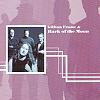

Celtic Lyrics Corner > Artists & Groups > Back Of The Moon > Back Of The Moon
|  |
Back Of The Moon
(2001) |
| Tracks : |
1. Kitten On The Gate
2. Sands O The Shore 3. Eric's March And The Jubilee Jig 4. C Reel Set 5. Will Ye Gang Love 6. The Rolling Hills O' The Borders 7. Irish Jigs 8. Gin I Were A Baron's Heir 9. Gaelic Air 10. Am Buachaille Ban 11. Greenland 12. Back Of The Moon |